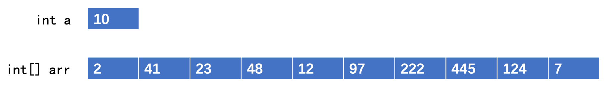

Java数组详解
Java Arrays - Complete Guide
掌握数组的定义、初始化、遍历与常用操作我要打十个！
—— 叶问
数组：特殊的数据结构
假设需要记录100个数字，定义100个变量显然不切实际。此时，我们可以使用数组来存放一组相同类型的数据。
数组是相同类型数据的有序集合，可以存放任何相同类型的一组内容，包括基本类型和引用类型。其中的每个数据称为数组的一个元素。
一维数组的定义与创建
数组本身也是一个对象，即使是基本类型的数组，也以对象形式存在。因此，创建数组需要使用 new 关键字。
public static void main(String[] args) {
// 推荐的定义方式
int[] array = new int[10]; // 创建一个长度为10的int数组
// 其他定义方式
int array2[] = new int[10]; // C语言风格，不推荐
int[] array3 = new int[]{1, 2, 3}; // 静态初始化
int[] array4 = {4, 5, 6}; // 静态初始化（仅限定义时）
}关键点
- 创建数组时必须指定长度。
- 数组长度一旦确定，不可更改。
- 数组元素有默认值（数值为0，布尔为false，引用为null）。
访问和操作数组元素
通过下标（从0开始）可以访问和修改数组中的元素。数组的长度可以通过 .length 属性获取。
public static void main(String[] args) {
int[] array = new int[10];
// 访问并打印第一个元素
System.out.println("数组的第一个元素为：" + array[0]); // 输出: 0
// 修改第一个元素的值
array[0] = 888;
System.out.println("修改后，第一个元素为：" + array[0]); // 输出: 888
// 获取数组长度
System.out.println("当前数组长度为：" + array.length); // 输出: 10
}注意：数组下标访问不能越界（小于0或大于等于数组长度），否则会抛出 ArrayIndexOutOfBoundsException 异常。
遍历数组
遍历数组是常见的操作，可以使用传统的for循环或增强的for-each循环。
传统for循环
public static void main(String[] args) {
int[] array = {1, 2, 3, 4, 5};
for (int i = 0; i < array.length; i++) {
System.out.print(array[i] + " ");
}
}增强for-each循环
for-each循环语法更简洁，适用于只需读取数组元素而无需修改的场景。
public static void main(String[] args) {
int[] array = {1, 2, 3, 4, 5};
for (int element : array) { // 依次取出数组中的每个元素
System.out.print(element + " ");
}
}for-each循环是编译器的语法糖，其底层实现仍然是传统的for循环。
多维数组
多维数组是数组的数组。例如，二维数组可以看作一个矩阵。
public static void main(String[] args) {
// 创建一个3行2列的二维数组
int[][] matrix = {
{1, 2},
{3, 4},
{5, 6}
};
// 访问第三行第二列的元素
System.out.println(matrix[2][1]); // 输出: 6
// 遍历二维数组
for (int i = 0; i < matrix.length; i++) {
for (int j = 0; j < matrix[i].length; j++) {
System.out.print(matrix[i][j] + " ");
}
System.out.println();
}
}可以创建更高维度的数组，但最常用的是二维数组。
可变长参数 (Varargs)
可变长参数允许方法接受任意数量的同类型参数。它本质上是一个语法糖，底层实现为数组。
public class Calculator {
// 使用...定义可变长参数
public int sum(int... numbers) {
int total = 0;
for (int num : numbers) {
total += num;
}
return total;
}
}
// 调用
Calculator calc = new Calculator();
calc.sum(1, 2); // 传入2个参数
calc.sum(1, 2, 3, 4, 5); // 传入5个参数
calc.sum(); // 不传入参数
使用规则
- 一个方法最多只能有一个可变长参数。
- 可变长参数必须是方法参数列表中的最后一个。
java.util.Arrays 概览
Arrays 提供了操作数组的常用静态方法：打印、排序、搜索、比较、拷贝、填充、与流/集合互转等。
import java.util.Arrays;
public class Demo {
public static void main(String[] args) {
String[] names = {"Alice", "Bob"};
int[] ints = {1, 2, 3};
int[][] matrix = {{1, 2}, {3, 4}};
System.out.println(Arrays.toString(names)); // [Alice, Bob]
System.out.println(Arrays.toString(ints)); // [1, 2, 3]
System.out.println(Arrays.deepToString(matrix)); // [[1, 2], [3, 4]]
}
}要点
toString适用于一维数组；多维数组使用deepToString。- 所有方法为静态：直接
Arrays.method(...)调用。
排序与搜索
对基本类型或对象数组进行排序与二分搜索。
import java.util.Arrays;
public class SortSearchDemo {
public static void main(String[] args) {
int[] data = {5, 1, 4, 2, 3};
Arrays.sort(data); // 升序排序
System.out.println(Arrays.toString(data)); // [1, 2, 3, 4, 5]
int idx = Arrays.binarySearch(data, 4); // 二分查找（数组需已排序）
System.out.println(idx); // 结果为元素下标，未找到返回负值
}
}对象数组排序
- 对象需实现
Comparable或提供Comparator。 - 大数组可用
Arrays.parallelSort提升性能。
拷贝与填充
import java.util.Arrays;
public class CopyFillDemo {
public static void main(String[] args) {
int[] a = {1, 2, 3};
int[] b = Arrays.copyOf(a, 5); // [1, 2, 3, 0, 0]
int[] c = Arrays.copyOfRange(a, 1, 3); // [2, 3]
Arrays.fill(b, 7); // 全部填充为 7
System.out.println(Arrays.toString(b)); // [7, 7, 7, 7, 7]
// 更灵活的局部拷贝
int[] d = new int[5];
System.arraycopy(a, 0, d, 1, 2); // 源a从0开始拷贝2个到d从1开始
System.out.println(Arrays.toString(d)); // [0, 1, 2, 0, 0]
}
}注意
copyOf与copyOfRange会创建新数组。- 对象数组拷贝为浅拷贝：仅复制引用。
比较与相等
import java.util.Arrays;
public class EqualsDemo {
public static void main(String[] args) {
int[] x = {1, 2};
int[] y = {1, 2};
System.out.println(Arrays.equals(x, y)); // true
int[][] m1 = {{1, 2}, {3, 4}};
int[][] m2 = {{1, 2}, {3, 4}};
System.out.println(Arrays.deepEquals(m1, m2)); // true（多维数组）
}
}陷阱
==比较的是引用地址；内容比较请用Arrays.equals/deepEquals。
（*）与流 / 集合互转
import java.util.*;
import java.util.Arrays;
public class StreamCollectionDemo {
public static void main(String[] args) {
// 数值流
int[] nums = {1, 2, 3};
int sum = Arrays.stream(nums).sum();
double avg = Arrays.stream(nums).average().orElse(0);
System.out.println(sum + ", " + avg);
// 数组转为列表（固定大小）
Integer[] arr = {1, 2, 3};
List fixed = Arrays.asList(arr); // 不支持 add/remove
List list = new ArrayList<>(fixed); // 可变列表
// 原始类型的陷阱
int[] primitive = {1, 2, 3};
List wrong = Arrays.asList(primitive); // size=1，元素是整个int[]
System.out.println(wrong.size()); // 1
}
}
提示
Arrays.asList返回的列表大小固定，增删会抛异常。- 如需增删，请用
new ArrayList<>(Arrays.asList(...))。 - 对原始类型数组使用
Arrays.asList会得到单元素列表。
1 / X